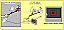

|
ATR Communication Systems Research Laboratories
Hikaridai2-1,Seika-cho,
Kyoto, 619-02, Japan
Tel: +81-774-95-1211
<noma,miyasato,kishino>@atr-sw.atr.co.jp
| Movie of the Pamltop display for dextrous manipulation |
| Figure 1 Pamltop display for dextrous manipulation |
| Figure 2 Conception of the PDDM system |
| Figure 3 Taxonomy of the input device |
| Figure 4 The PDDM with the VSTC | |
| Figure 5 Configuration of the trial system |
| Figure 6-a Initial situation (a) shows an initial layout of the virtual world and an image on the palmtop display. (b)-(e) show results of the virtual world after same operations are applied and image on the palmtop display. In this case, a cube is manipulated and a palmtop display is shifted to right and rotated clockwise. Each image is taken by the virtual camera that is moved as a motion of the palmtop display. | |
| Figure 6-b Fixed View in Background: FVB | |
| Figure 6-c Semi-Fixed View in the Object: SFVO | |
| Figure 6-d Camera Centered Magic Hand: CCMH | |
|  | Figure 6-e Object Centered Magic Hand: OCMH |
| Table 1 Four proposed methods in the handling phase |
| Figure 7 Mean completion time of four methods |
| Figure 8 Subjective rating of the each method |
| Figure 9 Simulation of dynamic of a wall |
| Figure 10 Block diagram of the simulation of a virtual wall |
| Figure 11 Experimental setup: Catch and place |

|
Figure 12 Results of the task |
| Figure 13 The PDDM system in an augmented reality |
{kind=link}
{kind=link}
{kind=link}
{kind=link}
{kind=link}
{kind=link}
{kind=link}
{kind=link}
{kind=link}
{kind=link}
{kind=link}
{kind=link}
{kind=link}
{kind=link}
{kind=link}
{kind=link}
{kind=link}